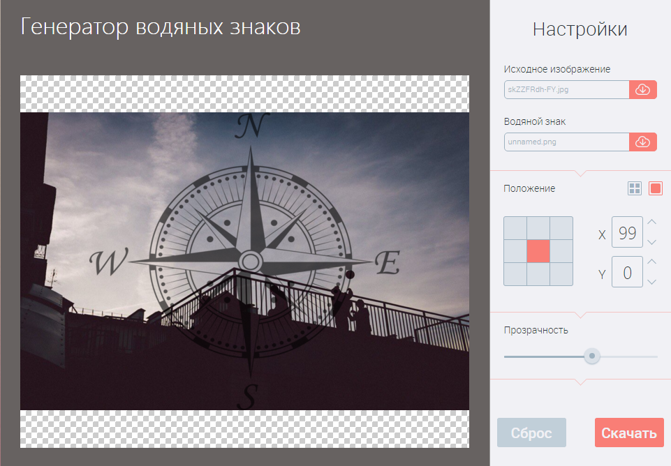

Описание проекта:
Мы приветствуем Вас на нашей презентационной странице, посвящённой проекту по реализации генератора водяных знаков. Этот проект был разработан в качестве третьего выпуского проекта курса "Комплексной веб-разработки" школы онлайн образования loftschool.com командой №7 во главе с Евгением Ивановым.
Демонстрация проекта:
Как установить наш проект ?
- git clone https://github.com/evgeniy-ivan0v/watermark-generator.git
- bower i
- npm i
- gulp
Структура проекта:
|\ | |node_modules - node-пакеты (появятся после их установки) | |dist - папка с дистрибутивом сайта | |app - папка с исходным кодом | |\ | | |bower - bower-пакеты (появятся после их установки) | | |css - скомпилированные css-файлы | | |fonts - шрифты | | |img - картинки и иконки | | |js - javascript-файлы | | |php - php-файлы | | |scss - sass-шаблоны | | |templates - jade-шаблоны | | |uploads - папка для загружаемых изображений | | | |index.html - основная страница (компилируется из шаблонов) | |bower.json - пакеты bower |gulpfile.js - скрипты для потокового сборщика gulp |package.json - пакеты node.js |README.md - этот файл
Как пользоваться нашим сервисом?
- Выберите "Исходное изображение".
- Выберите "Водяной знак".
- В секции "Положение" с помощью кнопок или значения координат поменяйте положение водяного знака.
- Поменяйте "Прозрачность" с помощью ползунка.
- Нажмите кнопку "Скачать",чтобы сохранить полученный результат.
Внимание!
- Если вы хотите замостить изображение водяным знаком, то переключите режим в правом верхнем углу.
- Чтобы поменять расстояние между водяными знаками,используйте значения координат.
Особенности нашего проекта:
★ Сохранение текущего языка в cookies.
★ Всплывающие сообщения об ошибках сервера.
★ Возможность менять координаты и отступы вручную.
★ Возможность движения размноженных вотермарков от 1-ого слева до 1-ого справа, аналогично сверху снизу, вне зависимости от установленных отступов.
★ Сделаны сессии для того,чтобы несколько пользователей могли одновременно пользоваться сервисом, а также удаление устаревших картинок (нужно только включить на хостинге).
Наша команда:
- Иванов Евгений (teamlead) — js, php, git, code review, workflow
- Сергей Равлюк — php, git, js
- Станислав Морозевич — вёрстка, js, git
- Елена Романова — js, git, вёрстка
- Дмитрий Чучин — js, git, вёрстка